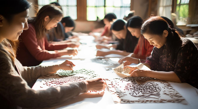
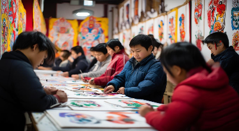
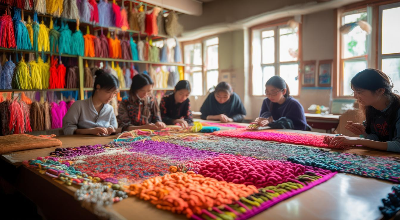
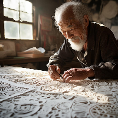
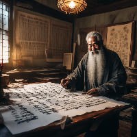

非遗剪纸艺术展
探索传统剪纸艺术的魅力与传承
中国书法艺术
感受汉字书写的艺术韵味
京剧脸谱艺术
了解京剧脸谱的色彩与象征意义
课程分类
查看全部推荐课程
查看全部
热门
8课时
•
初级
剪纸艺术入门
学习传统剪纸的基本技巧和创作方法，感受这项古老民间艺术的魅力。
王大师
4.9

新课
10课时
•
中级
京剧脸谱绘制
了解京剧脸谱的历史渊源、色彩象征和绘制技巧，亲手绘制经典京剧脸谱。
李老师
4.8

6课时
•
初级
中国结编织技艺
掌握中国结的基本编织方法，学习平结、吉祥结等经典结型的制作技巧。
张老师
4.7
非遗传承人
查看全部
王大师
剪纸艺术
国家级
李老师
京剧表演
国家级
陈老师
传统陶艺
省级

刘大师
书法艺术
国家级
学习数据
0
已学课程
0
学习时长(小时)
0
获得证书
0
文化币
文化币兑换
积分规则
¥10
现金红包
需要 1000 文化币
热门
¥50
现金红包
需要 5000 文化币
¥100
现金红包
需要
12000 10000 文化币
文化币获取方式：
- 完成视频观看获得2文化币/次
- 答题正确获得5文化币/题
- 全对额外奖励5文化币
- 参与线上活动获得不定额文化币